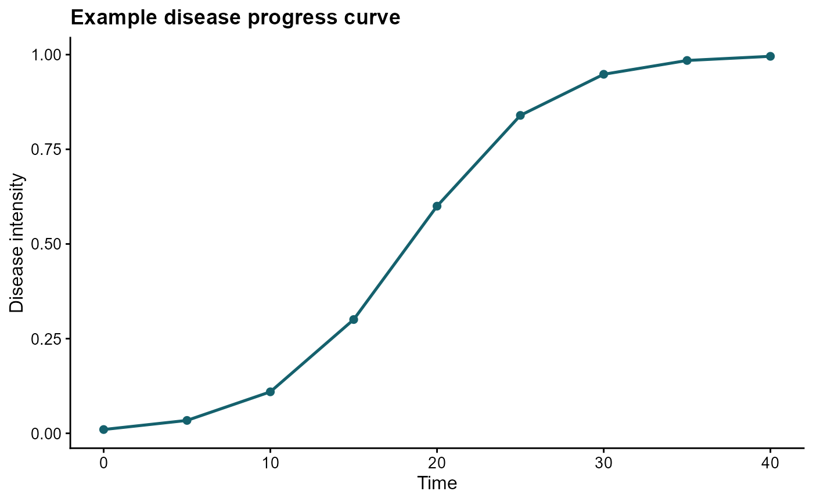

Summarizing epidemics with AUDPC and AUDPS
Kaique S. Alves
2026-05-17
Source:vignettes/area-under-curve.Rmd
area-under-curve.Rmd
library(epifitter)
library(ggplot2)
library(dplyr)
library(cowplot)
theme_set(cowplot::theme_half_open(font_size = 12))Overview
Area-under-the-curve summaries are useful when the goal is to condense an entire disease progress curve into a single number that represents epidemic intensity over time.
These summaries are especially helpful when the scientific question is about cumulative disease burden rather than the exact shape of the epidemic. They are less informative when curves cross, when epidemic onset differs strongly among treatments, or when the timing of disease increase is itself the main response.
epifitter currently provides three related
functions:
-
AUDPC()for the area under the disease progress curve. -
AUDPC_2_points()for estimating AUDPC from just two observations under a logistic assumption. -
AUDPS()for the area under the disease progress stairs, which gives more balanced weight to the first and last observations.
For AUDPC() and AUDPS(), repeated
observations at the same time point are now handled explicitly through
the aggregate argument. By default, replicated observations
are averaged per time point before the area is calculated.
The most important practical decision is the unit of summary. Decide whether you want one area value for a mean curve or one area value per experimental unit before calculating AUDPC or AUDPS.
Build an example curve
We start with a simulated epidemic and use the disease intensity values across time.
set.seed(1)
epi <- sim_logistic(
N = 40,
y0 = 0.01,
dt = 5,
r = 0.25,
alpha = 0.2,
n = 1
)
knitr::kable(epi, digits = 4)| replicates | time | y | random_y |
|---|---|---|---|
| 1 | 0 | 0.0100 | 0.0100 |
| 1 | 5 | 0.0341 | 0.0353 |
| 1 | 10 | 0.1096 | 0.0933 |
| 1 | 15 | 0.3005 | 0.3675 |
| 1 | 20 | 0.5999 | 0.6157 |
| 1 | 25 | 0.8396 | 0.8175 |
| 1 | 30 | 0.9481 | 0.9529 |
| 1 | 35 | 0.9846 | 0.9868 |
| 1 | 40 | 0.9955 | 0.9960 |
ggplot(epi, aes(time, y)) +
geom_point(size = 2, color = "#15616d") +
geom_line(linewidth = 0.9, color = "#15616d") +
labs(
title = "Example disease progress curve",
x = "Time",
y = "Disease intensity"
)
Compute AUDPC
AUDPC() uses the trapezoidal method to summarize the
curve over the observed period.
The absolute value has units of disease intensity multiplied by time. For example, if severity is a proportion and time is days, the AUDPC is expressed in proportion-days.
audpc_abs <- AUDPC(
time = epi$time,
y = epi$y,
y_proportion = TRUE,
type = "absolute"
)
audpc_abs## [1] 21.62241When the interest is in a scale-free measure, use
type = "relative".
audpc_rel <- AUDPC(
time = epi$time,
y = epi$y,
y_proportion = TRUE,
type = "relative"
)
audpc_rel## [1] 0.5405602The relative version is useful for comparing epidemics observed over the same time span but with different scales.
Multiple observations at the same time
Many experiments include replicated plots assessed on the same dates. In that setting, the area summary should be computed from one value per time point, not from the raw row order.
By default, AUDPC() and AUDPS() aggregate
replicated observations using the mean at each time.
time_rep <- c(0, 0, 5, 5, 10, 10)
y_rep <- c(0.10, 0.30, 0.40, 0.60, 0.70, 0.90)
AUDPC(time = time_rep, y = y_rep)## [1] 5.75
AUDPS(time = time_rep, y = y_rep)## [1] 8.25This is equivalent to calculating the area from the per-time means.
time_mean <- c(0, 5, 10)
y_mean <- c(mean(c(0.10, 0.30)), mean(c(0.40, 0.60)), mean(c(0.70, 0.90)))
AUDPC(time = time_mean, y = y_mean, aggregate = "none")## [1] 5.75
AUDPS(time = time_mean, y = y_mean, aggregate = "none")## [1] 8.25If a more robust summary is preferred, use the median instead of the mean.
AUDPC(time = time_rep, y = y_rep, aggregate = "median")## [1] 5.75
AUDPS(time = time_rep, y = y_rep, aggregate = "median")## [1] 8.25If you want to require unique time values and catch duplicated
assessments as an error, set aggregate = "none".
One summary curve versus one value per replicate
This distinction is important in experimental data.
If you pass all replicated observations together to
AUDPC() or AUDPS(), the functions now assume
you want a single summary curve, and they aggregate the
repeated observations at each time point before computing the area.
If instead you want one AUDPC or AUDPS value for each experimental replicate, compute the area separately within each replicate.
epi_rep <- sim_logistic(
N = 30,
y0 = 0.01,
dt = 5,
r = 0.3,
alpha = 0.2,
n = 4
)
knitr::kable(head(epi_rep), digits = 4)| replicates | time | y | random_y |
|---|---|---|---|
| 1 | 0 | 0.0100 | 0.0100 |
| 1 | 5 | 0.0433 | 0.0558 |
| 1 | 10 | 0.1687 | 0.1796 |
| 1 | 15 | 0.4763 | 0.4453 |
| 1 | 20 | 0.8030 | 0.7329 |
| 1 | 25 | 0.9481 | 0.9592 |
A single treatment-level summary can be obtained by pooling all rows and using the default aggregation by time:
AUDPC(time = epi_rep$time, y = epi_rep$random_y)## [1] 14.70536
AUDPS(time = epi_rep$time, y = epi_rep$random_y)## [1] 17.20195To obtain one value per replicate, group the data and compute the
areas within each experimental unit. In this case, use
aggregate = "none" because each replicate should contribute
only one observation per time point.
epi_rep %>%
group_by(replicates) %>%
summarise(
audpc = AUDPC(time = time, y = random_y, aggregate = "none"),
audps = AUDPS(time = time, y = random_y, aggregate = "none"),
.groups = "drop"
) %>%
knitr::kable(digits = 4)| replicates | audpc | audps |
|---|---|---|
| 1 | 14.4302 | 16.9247 |
| 2 | 15.2590 | 17.7543 |
| 3 | 14.5306 | 17.0279 |
| 4 | 14.6017 | 17.1009 |
In practice:
- use the default aggregation when you want one area summary for the mean epidemic across replicates;
- group by replicate when you want one area summary per experimental unit.
Compute AUDPS
AUDPS() is closely related to AUDPC(), but
uses a staircase correction that often improves discrimination among
curves in comparative studies.
Because AUDPC and AUDPS emphasize the time course differently, report which summary was used and avoid mixing them as if they were interchangeable.
audps_abs <- AUDPS(
time = epi$time,
y = epi$y,
y_proportion = TRUE,
type = "absolute"
)
audps_abs## [1] 24.13622
audps_rel <- AUDPS(
time = epi$time,
y = epi$y,
y_proportion = TRUE,
type = "relative"
)
audps_rel## [1] 0.5363605Estimate AUDPC from two observations
AUDPC_2_points() is helpful when only the initial and
final disease intensities are available and a logistic epidemic shape is
assumed.
audpc_two_points <- AUDPC_2_points(
time = epi$time[7],
y0 = epi$y[1],
yT = epi$y[7]
)
audpc_two_points## [1] 11.79275For simulated logistic data, this estimate should be close to the full-curve AUDPC computed from all intermediate observations.
full_curve_audpc <- AUDPC(
time = epi$time,
y = epi$y,
y_proportion = TRUE
)
c(
AUDPC_full_curve = full_curve_audpc,
AUDPC_two_points = audpc_two_points
)## AUDPC_full_curve AUDPC_two_points
## 21.62241 11.79275Absolute versus relative measures
Use absolute values when duration and measurement scale are already part of the interpretation.
Use relative values when you want a normalized measure between epidemics observed on the same conceptual scale.
Relative values can be easier to compare across studies, but only when the disease scale, time interval, and interpretation are compatible.
Practical guidance
- Use
AUDPC()as the standard summary for cumulative disease burden. - Use
AUDPS()when endpoint weighting matters and you want an alternative to the trapezoidal summary. - Use
AUDPC_2_points()only when two observations are available and the logistic assumption is justified. - When you have replicated observations at the same time point, keep
the default
aggregate = "mean"or chooseaggregate = "median"explicitly. - When you need one value per replicate or plot, calculate the
summaries inside each group and use
aggregate = "none"within that group.